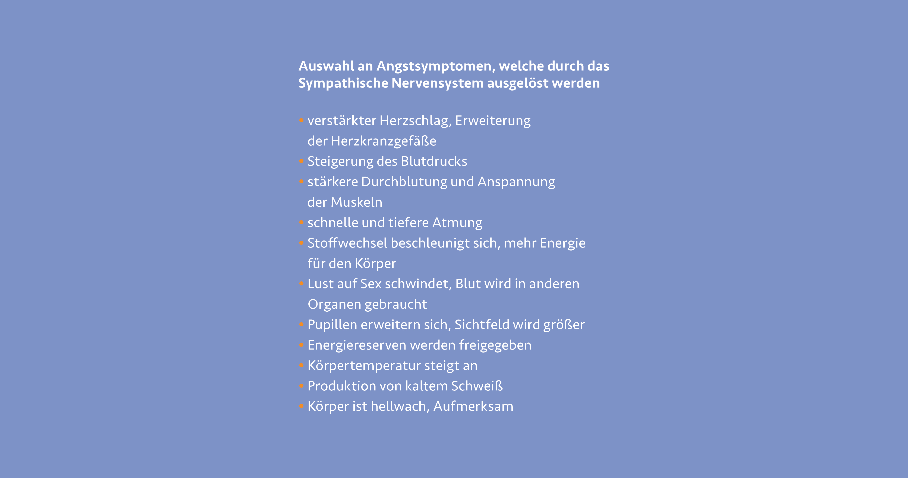

Um das Verhalten bei Stresssituationen besser versteht zu können, müssen wir schauen inwiefern sich Angst auf unseren Körper ausübt. Angst ist eine ganz natürliche Reaktion unseres Körpers auf psychisch belastende Reaktion oder Einflüsse unserer Umgebung. Angst schützt unseren Körper und bereitet ihn auf mögliche Gefahren vor. Jede Situation in der wir uns befinden, wird von den Sinnesorganen aufgenommen. Diese leiten die Reize des Hörens, Sehens, Fühlens, Schmeckens oder Riechens weiter an die Großhirnrinde. Diese vergleicht die Eindrücke mit zurückliegenden, bereits erlebten Situationen und entscheidet ob eine Gefahr besteht. Befinden wir uns in einer solchen Situation, aktiviert das „Sympathische Nervensystem“ eine Reihe an körperlichen Vorkehrungsmaßnahmen. 1
 2
Befinden wir uns in einer unübersichtlichen, uns ungewohnten oder fremden Situation, so sind wir oft Orientierungslos. Um daraufhin rationale und klare Entscheidungen treffen zu können, ist ein Prozess der Orientierung zwingend notwendig. Je nach Umgebung kann die Suche nach Orientierung in Stress, Anspannung, bei anhaltender Hilflosigkeit aber auch in Angstgefühle umschlagen, so Dr. Andreas Richter in einer seiner Veröffentlichungen zu Desorientierung und Angst aus dem Jahre 2010. 1 Durch den ausgeschütteten Botenstoff Noradrenalin reagiert der Körper blitzschnell. Durch die Umgehung der Großhirnrinde sind rationale Entscheidungen in solchen Situationen oft nicht mehr möglich. Erstarren oder unüberlegte Entscheidungen sind die Folge.
Auch bei den Auswirkungen von Starkwetterereignissen kommt es oft zu Angst bei Anwohner:innen und Betroffenen. Unzählige Berichte schildern Situationen, in denen Betroffene ihr Hab und Gut in Sicherheit bringen wollen, obwohl das Haus schon von Wassermassen umringt ist oder sie sich in andere Gefahrenlagen begeben, aus denen sie sich nicht mehr selbstständig befreien können. Befinden sie sich zudem unter Zeitdruck, im Beispiel der Naturkatastrophen vor einer nahenden Flut oder schnell steigender Pegelstände durch Starkregen, so sind Einflüsse von außen um unüberlegte oder riskante Situationen zu umgehen und Betroffene in Sicherheit zu bringen unumgänglich. Eine klare Anweisung der Rettungskräfte, eine Warnung auf das Smartphone oder eine eindeutige Richtungsangabe zum Evakuierungspunkt auf einem Wegweiser geben Orientierung und können Leben retten.
Leit- und Orientierungssysteme sind ein wichtiges Mittel, um Überblick und Ruhe an einem bestimmten Ort zu vermitteln. Je nach Ort und Situation erfüllen Leitsysteme unterschiedliche Aufgaben. Wird ein Leitsystem in Kultureinrichtungen eher als Unterstützung zum Erfahren des Geländes oder Museums gesehen, muss es etwa in Gesundheitseinrichtungen zielgerichtet, einfach und gerade für Menschen in Stresssituationen klar verständlich sein. Dort spielt die zeitliche Erfassung und Orientierung eine bedeutend höhere Rolle als an anderen Orten. Zudem muss in Einrichtungen der Gesundheitsvorsorge mit unterschiedlichen Ausgangssituationen gerechnet werden. Vor Ort kann der Ausfall von einzelnen Sinnen durch Unfälle oder erfolgte Eingriffe erhöht sein und muss durch ein durchdachtes Leitsystem aufgefangen werden. In komplexen Einrichtungen wie Krankenhäusern ist zudem die oft über Zeit gewachsene Infrastruktur und Verteilung der einzelnen Abteilungen auf großen Arealen eine Herausforderung für Leit- und Orientierungssysteme. Ist die Implementierung eines Leitsystems innerhalb eines komplexen und unübersichtlichen Ortes gelungen, so profitieren alle Nutzer:innengruppen davon. Service- und Lieferpersonal finden ihren Weg aufs Gelände, Ärzte:innen und Pflegekräften wird die Navigation vereinfacht und auch Patient: innen, Betroffenen und Gästen wird die effektive Orientierung und Wegeführung zum gewünschten Ziel ermöglicht. 3
-
Vgl. PAL Lebenshilfe: Was bei Angst im Körper passiert, 2021, https://www.palverlag.de/angst-koerper.html ↩︎ ↩︎
-
Abb.: Was macht Angst mit dem Körper https://www.palverlag.de/angst-koerper.html ↩︎
-
Vgl. Denker, Pia: Kriterienkatalog und Entwurfshilfe — Signaletik in Gesundheitsbauten, DOM Publishers, Auflage 1, Berlin, 2020, S. 23. ↩︎